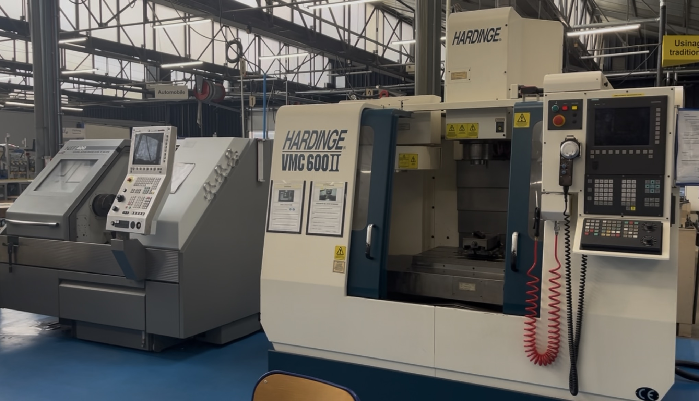
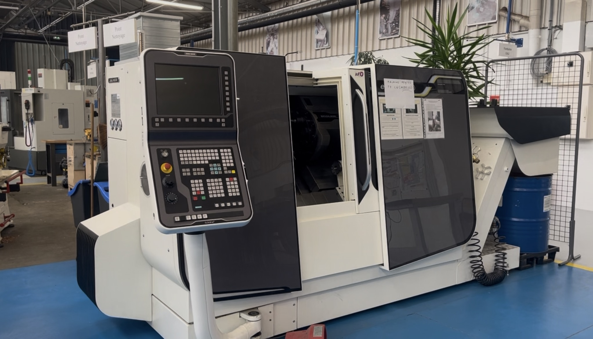
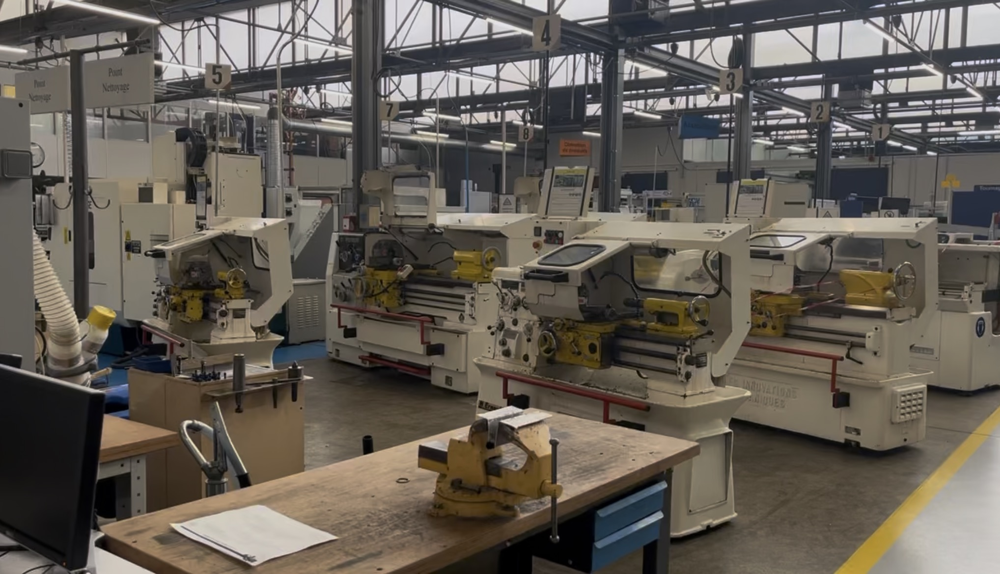

Centre d’usinage CN
Le centre d’usinage Hardinge VMC 600II permet de réaliser des opérations
de fraisage 3 axes pilotées par commande numérique : dressage, surfaçage, perçages précis,
alésages… C’est sur ce type de machine que l’on applique concrètement les parcours d’outils
vus en cours.

Tour à commande numérique
Le tour CN permet de programmer des cycles de tournage complets : ébauche, finition, gorges,
chanfreins, filetages… On y travaille la logique ISO, l’optimisation des passes et la répétabilité
des pièces produites.

Tours traditionnels
Les tours conventionnels servent à acquérir les bases : prise de pièce, choix des vitesses de coupe,
orientation des outils, lecture des verniers. C’est indispensable pour comprendre ce que fait
réellement la machine derrière un programme CN.

Fraiseuses & rectifieuses
Les fraiseuses et rectifieuses traditionnelles permettent de travailler la précision :
planéité, équerrage, états de surface. Elles complètent parfaitement la formation en montrant
les limites et les avantages de chaque type de procédé.